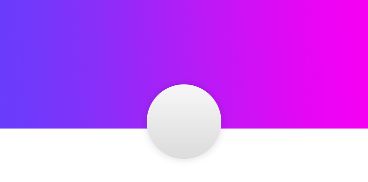

<mat-toolbar color="primary" class="example-toolbar">
    <mat-toolbar-row class="testrow">
      <div ffxHide.gt-xs>
      <button type="button" aria-label="Toggle sidenav" mat-icon-button (click)="drawer.toggle()" >
        <mat-icon aria-label="Side nav toggle icon">menu</mat-icon>
      </button>
      </div>
      <div>
           <span routerLink='/'>GESTION HUILERIE</span>
        </div>
    
      <div fxFlex fxLayout fxLayoutAlign="flex-end">
          <div *ngIf='globals.getCurrency()'>
          <button mat-icon-button  ><mat-icon>apps</mat-icon></button>
          </div>
      <button mat-icon-button [matMenuTriggerFor]="AppsM" position="end"><mat-icon>account_circle</mat-icon></button>
      <mat-menu #AppsM="matMenu" x-position="before"> 
        <!-- <div class="men">
            <span class="dot">
              <strong class="name">W</strong>
            </span>
        <h5>fdfdfdjk</h5> -->
        <button mat-menu-item>
            <mat-icon>dialpad</mat-icon>
            <span>Redial</span>
          </button>
          <button mat-menu-item (click)="onLogout()">
            <mat-icon>voicemail</mat-icon>
            <span>Déconnexion</span>
          </button>
        <!-- <mat-card class="example-card">
              
            <p id="teste">W</p>
            <p id="testa">{{currentUser.nomPrenom}}</p>
            <div class="btna">
            <div fxLayout="row" fxLayoutAlign="space-between start" >
                <button mat-raised-button  fxFlex="50" >Profile</button>
                <button mat-raised-button color="primary" fxFlex="50" (click)="onLogout()">Déconnexion</button>
            </div>
          </div> 
            
            
          </mat-card>-->
    </mat-menu>  
          
    </div>
      
    </mat-toolbar-row>
  
  </mat-toolbar>
  <mat-sidenav-container class="example-container">
    <mat-sidenav #drawer mode="side" opened role="navigation" class="example-sidenav">
      <mat-nav-list>
            <a mat-list-item > <mat-icon class="icon" color="primary">dashboard</mat-icon> <p class="aligndash">Dashboard</p> </a> 
            <mat-divider></mat-divider>
            <a mat-list-item routerLink='contact' ><mat-icon color="primary">contacts</mat-icon><p class="aligndash">Contacts</p> </a>
            <mat-divider></mat-divider>
            <a mat-list-item routerLink='stockageolive' ><mat-icon color="primary">book</mat-icon><p class="aligndash">Stockage Olives</p> </a>
            <a mat-list-item routerLink='trituration' ><mat-icon color="primary">art_track</mat-icon><p class="aligndash">Trituration</p> </a>
            <mat-divider></mat-divider>
            <a mat-list-item routerLink='achat' ><mat-icon color="primary">library_books</mat-icon><p class="aligndash">Achats</p> </a>
            <mat-divider></mat-divider>
            <a mat-list-item routerLink='vente' ><mat-icon color="primary">subtitles</mat-icon><p class="aligndash">Vente</p> </a>
            <mat-divider></mat-divider>
            <a mat-list-item routerLink='grignons' ><mat-icon color="primary">dynamic_feed</mat-icon><p class="aligndash">Grignons</p> </a>
            <mat-divider></mat-divider>
            <a mat-list-item routerLink='caisses' ><mat-icon color="primary">money</mat-icon><p class="aligndash">Dépenses</p> </a>
            <mat-divider></mat-divider>
            <a mat-list-item routerLink='sta' ><mat-icon color="primary">library_books</mat-icon><p class="aligndash">Statistique</p> </a>
            <!-- <h4 mat-subheader >Gestion des réparations</h4> -->
       
        
      </mat-nav-list>
    </mat-sidenav>
    <mat-sidenav-content>
      <router-outlet></router-outlet>
    </mat-sidenav-content>
  </mat-sidenav-container>
  <mat-toolbar class="example-footer" >Copyright &copy; Wael  hassine</mat-toolbar>